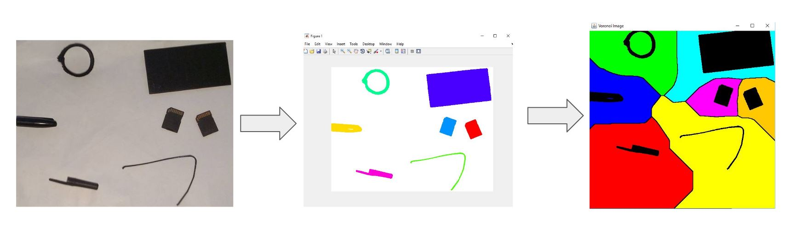
At a high level, This project presents an implementation for generating a generalized Voronoi map that aids in 2D object avoidance. The implementation consists of both MATLAB and Java components and allows the user to snap a picture of a "map" and generate a Voronoi map of the image, which is then composed into a traversable map.
The pipeline takes an input image containing a number of objects. This is considered the map to be traversed. A MATLAB script will separate the objects from their background and cluster the pixels that belong to individual objects.
After the objects in the image are recognized and highlighted the data is forwarded to a Java application that use a flood fill algorithm to determine the Voronoi regions for each individual object to generate a Voronoi map. A tile will be created for each object on the map and all of the pixels within a given tile will be closest to the object that formed the given tile based on the Manhattan distance metric.
Finally, the edges between these tiles will be reformatted into a map that can can be traversed to find the shortest path from location to location, while still avoiding the objects at any given point. The Java implementation presents the user with an interactive image where two edges can be selected on the Voronoi map and an A* search algorithm is used to find the shortest path between the two points.
Visit my GitHub repository for a more detailed explanation of the algorithms used.
Example 1. Voronoi Generation
Example 2. Shortest Path Traversal
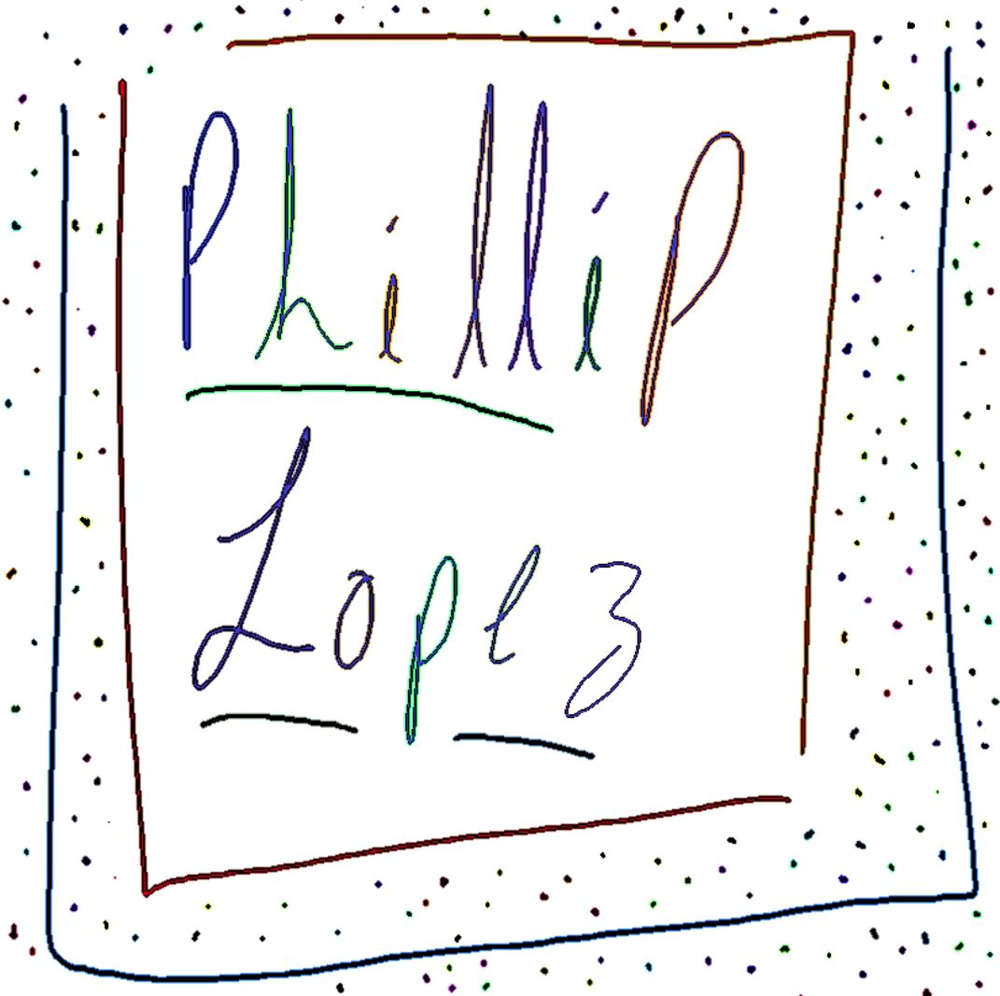
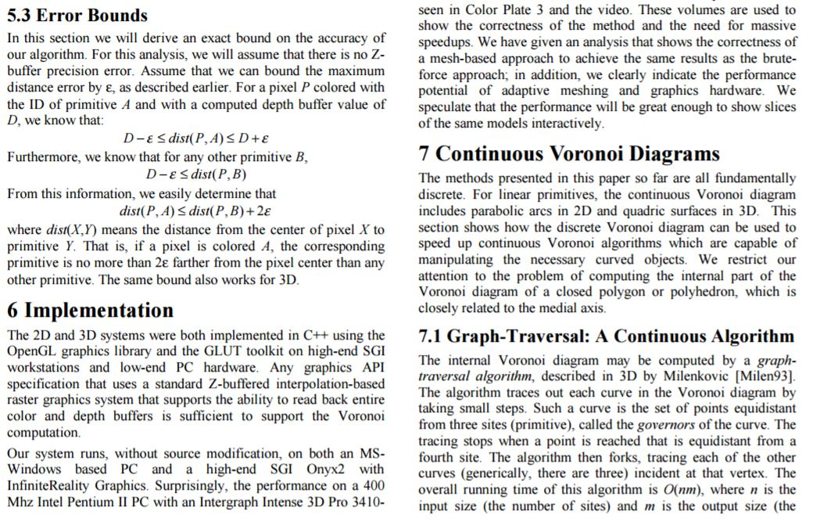
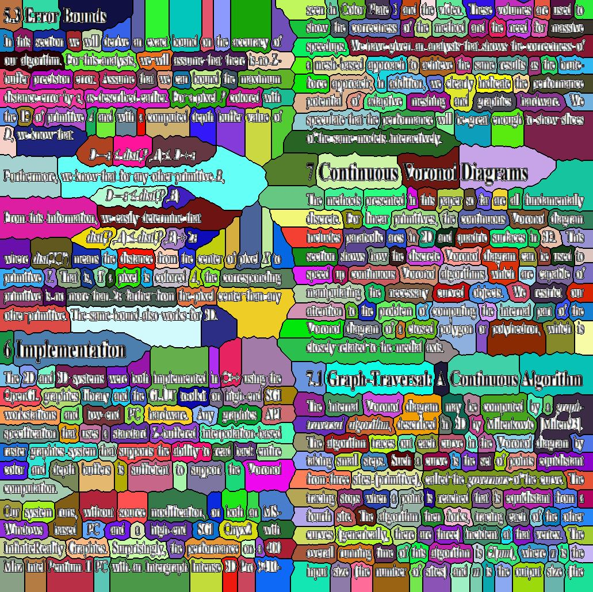
Fast GVD's https://files.ifi.uzh.ch/vmml/SummerSeminars2010/PaperWriting/papers/p277-hoff.pdf
Stage 1: Input Image
Stage 2: Object Detection and Labeling
Stage 3: Voronoi Flooding
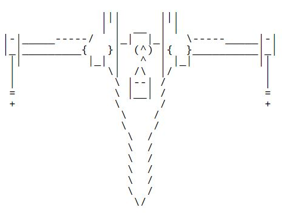
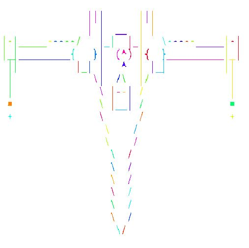
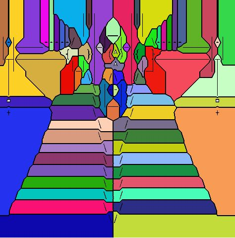
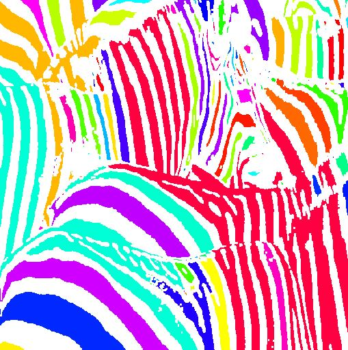
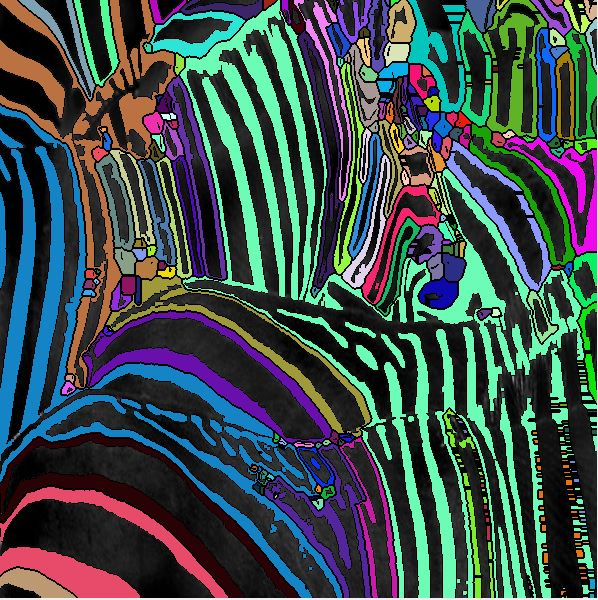
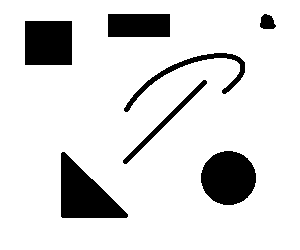
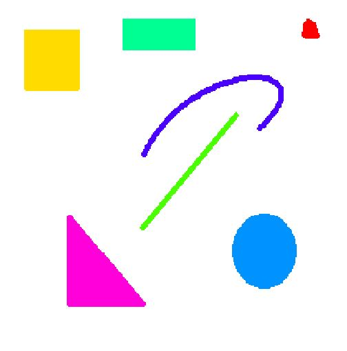
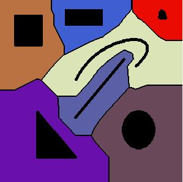
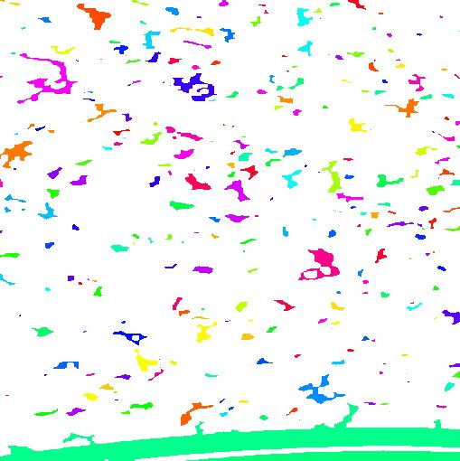
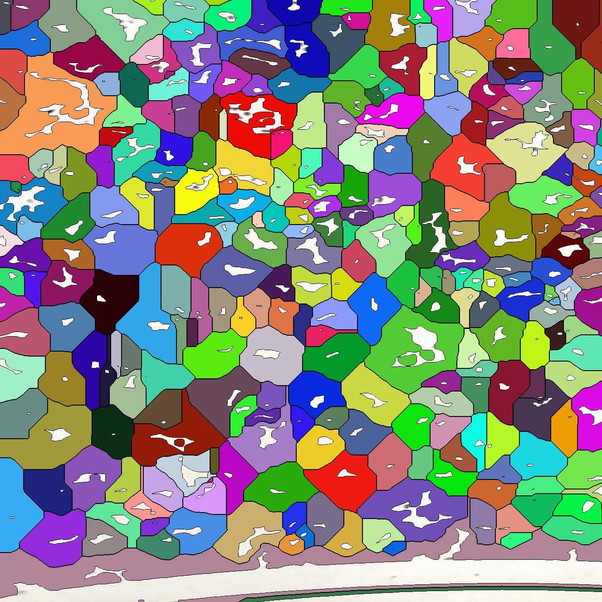
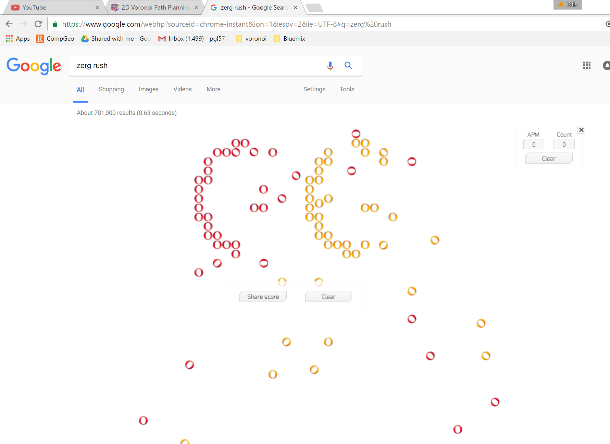
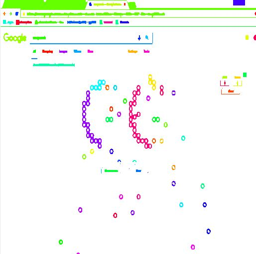
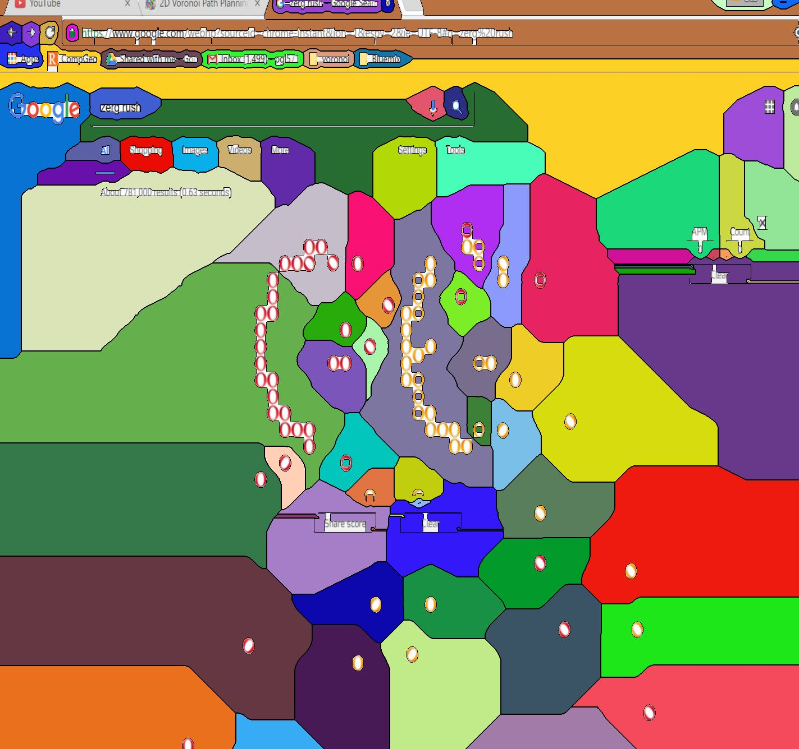